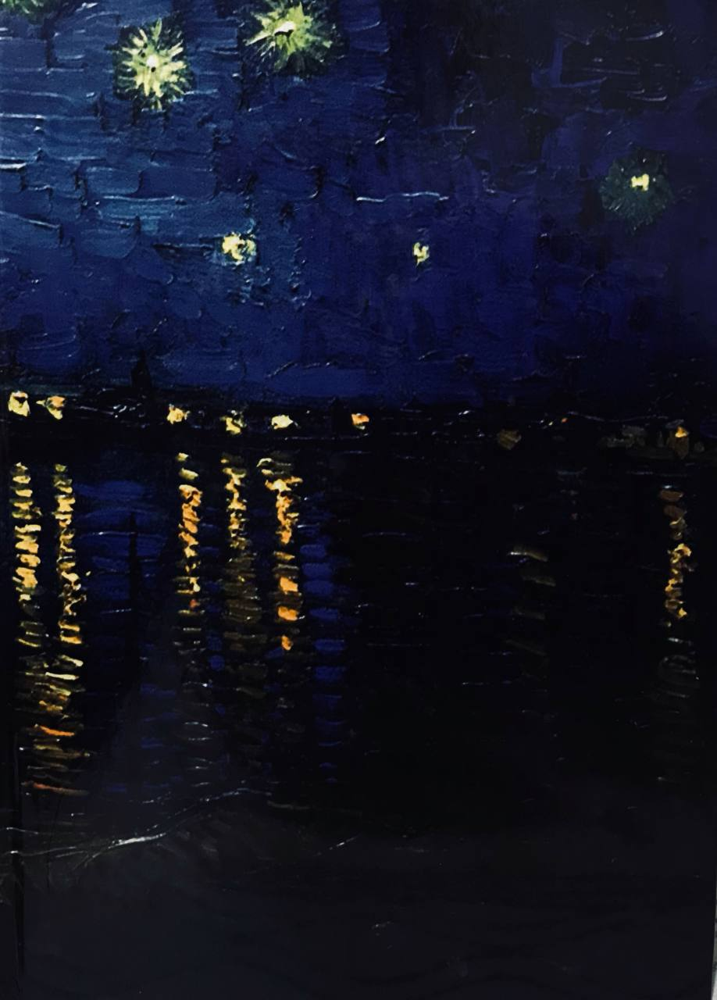

هل كان ديسمبر قارسًا لهذا الحد؟
لا أعلم من أين أبدأ، كل ما أتيقن منه أني ممتلئة بالقدر الكافي لأبدأ من أي مكان. أبحث عن كتاباتي/ ذكرياتي/ أحزاني القديمة. المشهد حاضرٌ في رأسي، الألوان والأصوات والروائح، المعاني ذاتية تكتسي صورًا تليق بأصحابها.

١ ديسمبر ٢٠٢٢م
لا أعلم من أين أبدأ، كل ما أتيقن منه أني ممتلئة بالقدر الكافي لأبدأ من أي مكان. أبحث عن كتاباتي/ ذكرياتي/ أحزاني القديمة وأقرؤها؛ تنهمر دموعي وأستشعر تلك الغصة بقلبي، لا يتغير شيئ، الكتابة لا تشفي ولكنها تنجي من الموت،تُحيي ذكر الميت وتبدأ من حيث النهاية، حيث لا نهاية. وكما تقول رضوى عاشور-التي يأخذني الحنين إليها كثيرًا- : الحكاية التي تنتهي لا تنتهي مادامت قابلة لأن تُروى.
٣ ديسمبر ٢٠٢٢م
المشهد حاضرٌ في رأسي، الألوان والأصوات والروائح، المعاني ذاتية تكتسي صورًا تليق بأصحابها. سأعيد تعريف المعاني؛ الحنين: ضوء الدرج البرتقالي الذي ينير بقعتها من العالم.
أثر الفراشة: أسماؤنا المنقوشة على جدار الحائط أمام بابها،
الطُهر: رائحة البخور التي تعطِّر منزلين ظهر كل جمعة.
الطفولة: دبيب الأقدام المرحة صعودًا ونزولاً.
الفقد: أن تُصبح المعاني مجرد ذكرى ثاوية بركنٍ في زاوية القلب.
الامتنان: أن تمرَّ الأعوام ومازالت لمعة عينيها تضيء لي بالصور.
البلاغة: قول رضوى عاشور الذي تحقق معناه "لا أحد يرحل تاركًا وراءه كل هذا الحبّ."
الحضور: غيابها بحضورٍ جميل.
تمرُّ الأيام، والأعوام ومازالت لذاكرة الطفولة بهاء جميل، تحفظ كل الأشياء نقيةً ووديعة وتمسح بيدها البريئة حزن القلب الجميل. بانتقائيةٍ أحبها يحضر المشهد في رأسي ولا يغيب، اليوم ذكراكِ السابعة للمغيب.
٤ ديسمبر ٢٠٢٢م
كان الغروب بديعًا اليوم، ودّعتُ الشمس التي صبغت السماء فصارت برتقالية لتعطي إحساسًا بالدفء الشديد، والأن الأشياء ليست كما تبدو دائمًا كان الطقس باردًا، النصف الآخر من السماء تملؤه الغيوم ونقاط المطر الخفيفة تلامس يدي وتترك أثرها بكتابٍ أحمله. أغبط السماء التي تستطيع احتواء هذا كله.
قرأت جملةً استوقفتني وتقول: "من سيعرف قلقي وفي وجهي كل هذه الطمأنينة؟" أُتقن هذا الأمر ببراعة، أسأمُ من إتقانه أحيانًا، لو كان بإمكاني التمني؛ سأسأل الله أن يرفع غشاوة الطمأنينة الزائفة من وجوه كل الخائفين، أن يهبهم قلبًا -قلبًا واحدًا فقط- بمقدوره تفرّسُ وجه حبيبه وطمأنته؛ فيذهب عنه الخوف والسؤال.
الأشياء ليست كما تبدو، وأنا أيضًا.
٥ ديسمبر ٢٠٢٢م
أبدأ يومي بدمعةٍ وابتسامة، أمسك هاتفى وأقلِّب بالمتصفح الأزرق لأقرأ خبر وفاة النبيل محمد أبو الغيط إثر معركة باسلة مع المرض الخبيث، كنت أحكي لأمي عنه فجرًا متمنية معجزة الشفاء، وبشكلٍ خاص أخذ الحديث منعطفًا عن "أبو الغيط" الذي يخص عائلتنا هذه الأيام. مرّت بنا صورٌ ليست بقليلةٍ منه، تفاصيلٌ قاسية ومحزنة بشكلٍ خام؛ تذوقنا النجاة مرةً، وتجرعنا الهلاك والفقد مرتين، أما الآن فنُصارع بقلوبٍ حزينةٍ مُفجَعة. دخلت على صفحته لأقرأ ما كتبه بعنوان "وردتي البيضاء الخارقة" بجزئيها الأول والثاني، تبسمت لأن الحياة رغم قسوتها أهدته وردةً بيضاء خارقة، "إسراءه" الذي تمنى لو وهب الله كل إنسانٍ مثلها. أعرف "أبو الغيط" آخرين بلا وردة، لا يعلم بأمرهم أحد، ولا يؤنس وحشة قلوبهم وأجسادهم الواهنة أحد،
أذكر قول رضوى عاشور: "أحيانًا أقول أن الحياة تقسو بلا معنى ولا ضرورة، وأحيانا أقول حظنا منها، و إن ساء، أقل قسوة من الآخرين، أقل بكثير."
الحياة رحلة، حكاية، أحيانًا تمنح أبطالها هبة القَصص؛ تُخلَّد ذكراهم فتبقى آثارهم قيد الاكتشاف على مر الزمن، تزيد فرصهم للفوز بقلوبٍ مُحبِّةٍ تذكرهم عند ربها. ماذا عن رفيق الرحلة؟ يمكن أن توجد قصص يملك أبطالها وردة ولا يعلم بأمرهم أحد، لكن هل يمكن أن توجد قصص خاوية بلا وردةٍ ولا يعلم بأمرها أحد؟ إنها فكرةٌ قاسية، بل حقيقة شديدة القسوة.
"أنا قادم أيها الضوء" هكذا عَنونَ سيرته قائلاً: "الكتابة هي محاولاتي لمغالبة الزمن والموت" أتأمل العنوان فيذكرني بجملة "قد تهدينا الحياة ضوءً في آخر النفق" فأقول لا، بل يكفي أحيانًا أن تهدينا الحياة وردةً لنصل إلى آخر النفق.
للحديث بقية أذكرها غدًا بإذن الله.
هل كان ديسمبر قارسًا لهذا الحد؟ ربما.
٦ ديسمبر ٢٠٢٢م
كنت أنوي اليوم الكتابة عن الملتقى الإلكتروني "لغرفة الكتابة" أمس والمناقشة مع الكاتبة إيمان مرسال، كانت مناقشةً لطيفة افتقدت عيش أجوائها منذ وقتٍ طويل، أنارت في رأسي بعض أفكار، بعض الإجابات كانت مرضية لحدٍ ما. الآن أتقبل فكرة أن البحث عن إجابةٍ لا يمكن بالضرورة أن نناله بطرح سؤالٍ واحد، طرح السؤال أيضًا لا يضمن وجود الجواب المبتغى. جواب اليوم يمكن ألا يكون مناسبًا غدًا، الحياة ليست دراسة علمية، مقدمات ونتائج ونظريات، حتى وإن قدمتُ الجهد العملي للتطبيق فلا بد من انتباهي جيدًا لذاتية التجربة ونسب الخطأ التي ستصبح غالبًا جزء منها ومنّا؛ استنتاج هذا بالنسبة لشخص عملي هو أمر في غاية الشتات والوضوح في آنٍ واحد.هل بالضروري أن يكون للكاتب قضية تدفعه للكتابة؟ كيف يمكن أن يعرف هذا وهو مازال على أعتاب الطريق؟ كان هذا سؤالي الذي طرحته على إيمان مرسال، أعي بدائيته جيدًا وأحب هذا، كان جوابها مختلفًا. أسرد هذا والأفكار الأخرى غدًا بإذن الله، الإنفلونزا لها تأثيرها في مقاومة الكتابة مهما رغبت بذلك.
١٢ ديسمبر ٢٠٢٢م
الأيام لا تتكرر، لكن ربما الأحداث، حتى المخيف منها والمؤلم، حينما تستدعي الذاكرة أمرًا بشدّة فإنها تجرّه إلى أحلامك رغمًا عنك، الأحلام جميلة أحيانًا، تجمعني بالذين لم ولن أجتمع بهم يومًا، أردت لو أخبر أحدًا أني رأيته في منامي، فقط بتلك البساطة، كإخطارٍ بأنه زارني وأني أحببت زيارته، أبتسم للدنيا التي تجمعنا بشكلٍ ما، التي تقضي حاجة اللقاء فلا تعلق في نفسي. مازلت أمنيتي الساذجة تراودني؛ ياليت الحلم حدثٌ مشتركٌ بين اثنين. أمي تشبه النسمة، دائمًا، لها أثر النسمة في كل أحوالها؛ حمدًا وحزنًا، صحةً ومرضًا، أتأمل هذا بشدة حينما تغمرني خفتها في أحوالها الثقيلة، أعجب وأغار، كيف تكون رقيقةً لهذا الحد؟ رقتها تخيفني، لأنها أجمل من أن تكون. أستشعر لطف الله في الأيام الصعبة، أستبصر الضوء آملة أن أراه، لا أحب الانتظار لكني أتمرس اعتياده هذه الأيام. أتفكر بقول رياض الذي يزين حقيبتي:
غدًا تأتي الغيمة،
وتبلل القلب المعطوب،
غدًا يمد النهر أصابعه،
ويربت على كتفي العطشى.
١٥ ديسمبر ٢٠٢٢م
مغمضة عيناي، أسأل وسط الحلم، أهذا حلم أم حقيقة؟ نفسي تتمنى أن يكون حقيقة، لوهلة آمنت بذلك، الصدق والحب والفرحة التي تعم الأرجاء تؤكد هذا. كان الصالون ممتلئًا بالأحبة، الستائر البيضاء تتدلّى لامعة ناعمة. اثنان، أعز اثنين يجلسان جوار بعضهما، اعتاد كلاهما تمركز عرش المكان الذي يجلس فيه، أحدهما يمسك عكازه بحب، والآخر يمسك بيد الكرسي رأسه لأعلى كالذي يجلس على مُلكه، كان دستورهما دائمًا حبًا وحكمة، حنانًا وعطاءً، والخير نهر من دعاءٍ جميل لا ينقطع وطبطبةٍ تهز الجسد فيغدو آمنًا. أُحكم قبضة عيني كي لا يتفلت الحلم إذا كان حلمًا، أدرك هذا حينما رأيتهما وهما اللذان رحلا منذ وقتٍ طويل، كيف يجتمعان سويًا الآن؟
كيف أقبض الحلم بكفي؟، كيف أحمله من مشهدٍ عابر بالنوم إلى ذكرى بالحقيقة؟. الأحبة يشعرون بنا، والأرواح تتلاقى في ملكوت الله، ليست دروشة، ولكنها حالات محبة، سأستغل الموقف وأضع اسمى بجملة مفيدة، "حالات مودّة" حالةٌ نعيش بها فتُحي الميت لأنه بالقلب حيُّ لا يموت، ولأن الله رحيم ودود. الأماني التي صارت حقيقة في غيابهم فلم تكتمل، يمكن لها الآن أن تتحقق بالأحلام، يكون هذا كافيًا ومُرضيًا جدًا، يصير الحلم هبةً يمكن أن نعيش العمر امتنانا لها، أذكر جملة "ورأيتنا بالجنة جالسين نذكر أيام الدنيا المحزنة ضاحكين" تلهمنى لأكتب أخرى تخصني؛ ورأيتنا بالحلم جالسين نعيش أيام الدنيا التي لن تجمعنا فرحين.
هل كان ديسمبر قارسًا لهذا الحد؟ ربما لا.
١٩ ديسمبر ٢٠٢٢م
ونحيا بذاكر كم إذا لم نراكمُ
ألا إنَّ تذكارَ الأحبَّة ينعشُنا
٢٠ ديسمبر ٢٠٢٢م
أفتح دفتري، أنوي الكتابة عن ذكرى أخرى تخصني بديسمبر، أحاول فلا أستطيع، بعض الأحداث ثقيلة جدًا على قلب هشّ، تحتاج مرور وقتٍ أطول حتى تَرِقّ، يرقُّ كل ما تحمله؛ المشاعر المُدشّنة، الصور، الآثار، فيمكن حينها استدعاءها من بعيدٍ لتأتي أخفّ.أتأمل الوقت، ليس كفيلًا بالنسيان، ولا مادة مُطهرة للتئام الجروح، وإنما يدٌ رحيمةٌ تجعل الآلام أقل انسكابًا بين ثناياها، تحتضن البكاء وتشربه حتى تجف الدموع مُبقية آثارها، ابتسامة دائبة في عين الأقدار تخبرها أن كل الأشياء عابرة. الوقت كالتاريخ، لو أن للحاضر ذكرى سيكون هو، ولأني أحب الذكريات فإني أمتنُّ له فكرةً وأثرًا. لا يسعني سوى تأمل الوقت، مراقباة آثاره على نفسي والحياة بمن أحب، محاولةً رؤية ابتسامته ولمس رحمة حضوره في نفسي. "تبات نار تصبح رماد" هل كان الوقت ماءً تحيل النار إلى رماد؟ هل كان الوسادة التي احترقت حتى نرى الرماد؟ ربما لا يجلب الشفاء لكن أحيانا يصير جوابًا شافيا للأسئلة.
انهى حديثي بتأمل أبيات للشاعر الرقيق -صديق طفولتي- فاروق جويدة:
ويمضي العام.. بعد العام.. بعد العام
وتسقط بيننا الأيام
ويصبح عمرنا سدى
ويصبح حبنا قيدًا
وحلم بين أيدينا حطام
رمادٌ أنت في عيني
بقايا من حريقٍ ثارَ في دمنا ونام
ويمضي العامُ.. بعد العامِ.. بعد العامْ..
فلا أنتِ التي كنتِ ولا أنا فارس الأحلام
٣٠ ديسمبر ٢٠٢٢م
الواحد والثلاثون من ديسمبر، آخر يومٍ بالعام الميلادي لـ ٢٠٢٢
لطالما كنت أحب هذا الرقم ثنائيته وتناغمه، والحقيقة أنه كان ذا طابعٍ جميلٍ ومُرضي، ممنونة لله الجميل أشد امتنان، قد أعطاني ما أردت، قضى لي حاجاتٍ في نفسي، وتتجدد حاجاتي دائمًا، أعلم أنه كريم رحيم وأن ليس لي سواه أطلب منه وأطمح وأطمع أيضًا.لا أحبُّ الحِكَم التي يتناثرها الناس بنهاية الأعوام، رسائل الشكر والحبّ المُعلنة، أشعر بشيءٍ من الزيف والتقليد أحيانًا، مازالت أؤمن أن الأشياء الصادقة لا تظهر للنور دائمًا ويراها الجميع، الجميع يرى الوصول، ولا يعلمُ وعورة الطريق إلا الساري وصحبه.
تدفعني الأعوام لأعتابٍ جديدة لا أعلمها ولا يسعني خيالي إليها، ومع مراقبتي الدائمة للوقت فإنني بحاجةٍ لمراقبة نفسي. الحياة صعبة ومُفجعة مهما حدث، تفجعني، وتجعل الخوف يفعل بعقلي الأفاعيل، وأشعر أني مقيدةٌ بين إيماني الكبير وفزعي الهائل، بين إرادتي القوية وتسليمي الضعيف، بين الطمأنينة الفيّاضة والخوف المُهلك، حتى أتساءل؛ من أنا؟ أي الاختيارات أكون؟ هل يجب أن نكون إجابةٍ ما طوال الوقت؟
تراودني فكرةٌ بأن الإنسان منّا -على الأقل أنا- طبقات، كلما تقدم به العمر كلما أُزيلت طبقة؛ فصار أخفّ وأرقّ، ربما يتخففُ من أحلامه، وبحبٍ تجعله أحماله أرقّ. بين الجموح الغائر وعنفوان الشباب، زينة الدنيا ومتاعها، وبين الزهد، التخفف، إدراك حقيقة الدنيا واستشعار أدقّ النعم، الرضا، التأمل. كل هذه المعاني وفكرة وجودها أصلاً، وكأن العالم عالمين دنيا ودنيا أخرى مضادة، ونحن طباخون يجب أن يصنع كلاً منا وجبته،اختياراته، التي سيُحاسب عليها ويذوقها.
تدفعني الحياة للتأمل، ويدفعني التأمل للكتابة، وتدفعني الكتابة لأتقن كيف أحيا على هذه الأرض المجبولة بالصعاب والمكارِه.
هل كان ديسمبر قارسًا لهذا الحد؟ قارسًا جدًا.